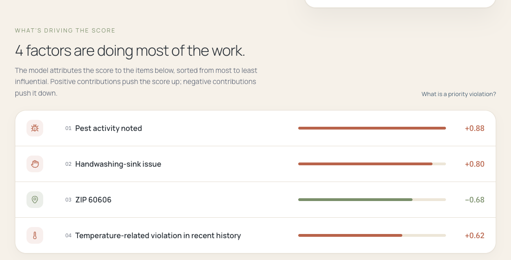
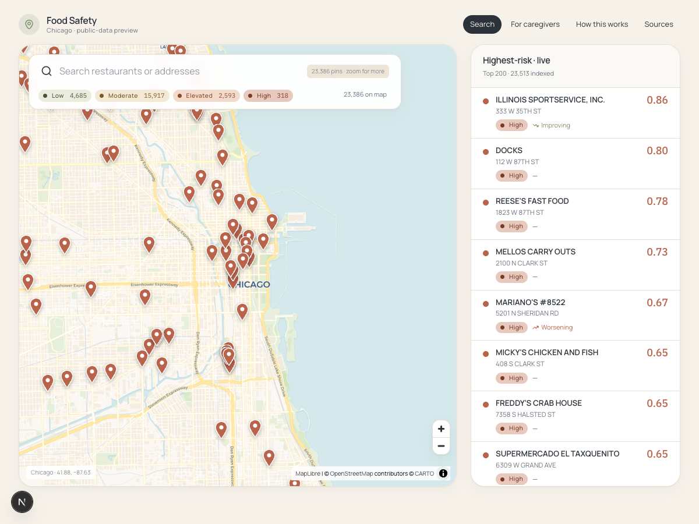
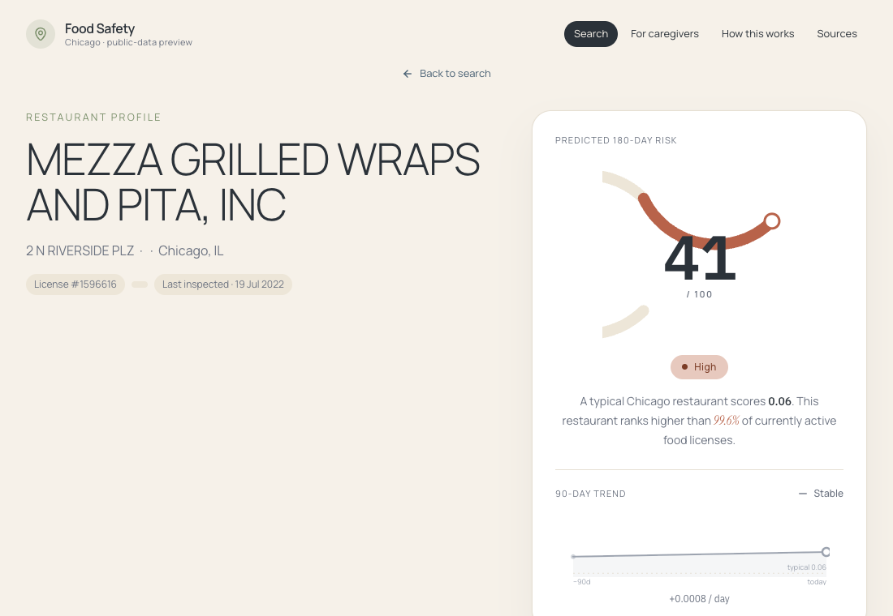
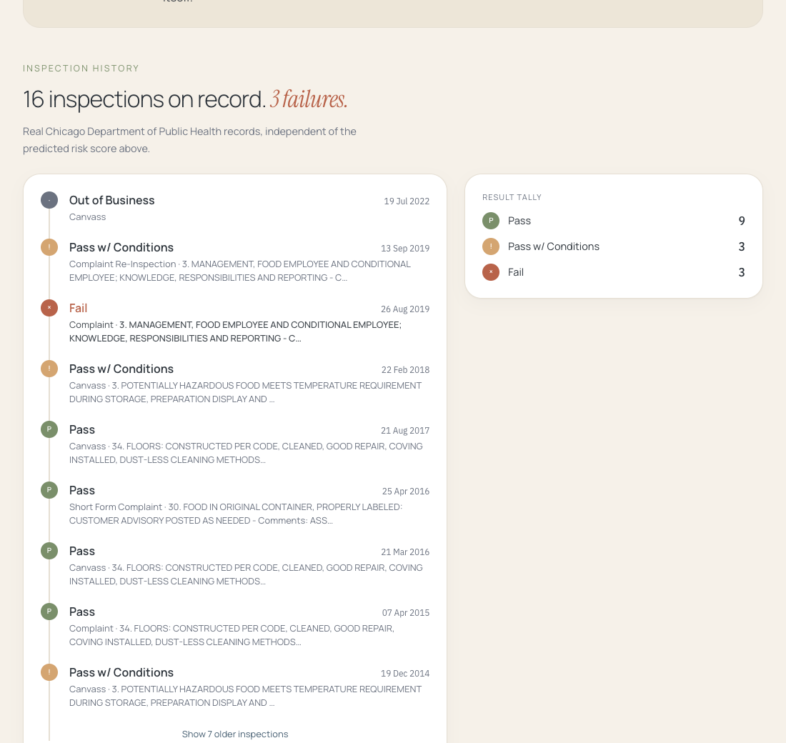

State of the model and the web app. What works, what is still rough, and what we want to focus on next.
2026-06-04 local dev only no AWS yet
Product framing
Is the predicted risk elevated over the next 180 days?
Is it improving, worsening, or stable over time?
What is driving the signal?
Audience: Chicago consumers. The clearest user story is the immunocompromised diner choosing for someone with cancer, transplant, or another condition where the drivers matter more than the score.
Data layer
inspections from 2010 to 2026-05. Labels and most prior-history features come from here.
8 food-relevant request types. BallTree-prepped for 300m / 90d joins (not yet wired into the production feature set).
Facility type, risk tier, address, lat/lon, license age.
License history rows for license_age_days and license_n_history_rows features.
Burn-in cutoff: 2019-01-01. Pre-2019 inspections seed prior_* features but never become training labels. Chicago changed inspection procedures in July 2018 so pre and post labels are not comparable.
Target variable
For each inspection: in the next 180 days, does this restaurant get a Fail result OR a priority violation (Chicago codes 1 to 29)?
y = 1 if any inspection in
(inspection_date,
inspection_date + 180d]
has results == "Fail"
OR contains a priority code
y = 0 otherwise
y = NA on burn-in rows
y = NA on right-truncated rows
(anchor + 180d > dataset max)
The forward window is right-exclusive of the inspection date itself. We predict what happens after this visit, not on it.
Feature engineering · overview
Three families. Every prior_* count is computed via
a cumsum minus self trick: at each row, sum the
flag column over all rows for the same license, then subtract the
row's own value. The result is the count strictly before this
anchor. No .shift() bookkeeping, no
off-by-one, no leakage.
df["prior_fails"] = (
df.groupby("license_id")["is_fail"]
.cumsum()
- df["is_fail"]
)
prior_inspections, prior_fails,
prior_priority_violations,
prior_core_violations,
prior_fail_or_priority_events,
days_since_last_inspection,
days_since_last_fail,
temporal_month, temporal_quarter,
license_age_days,
license_n_history_rows.
static_facility_type,
static_risk_tier,
static_zip. Rare ZIPs collapse to "infrequent"
instead of overfitting to a handful of rows.
Hand-picked regex on prior violation text. Detail below.
Dropped along the way: static_zip3 (subset of zip),
temporal_year (time-anchored, breaks chronological split),
temporal_dow, temporal_season,
prior_fail_rate* ratios, and the 311 spatial counts.
Feature engineering · NLP layer B
The violations field is pipe-separated free text with a code prefix and an inspector-written comment. Structured code counts catch the "what" (priority vs core). These keyword flags catch the "specifically what" inside the comment, with regex tuned to the actual Chicago phrasing.
| Flag | Pattern (case-insensitive) |
|---|---|
| flag_kw_temperature | \btemp(?:erature)?\b | holding[- ]?temp | cold[- ]?holding | hot[- ]?holding |
| flag_kw_cooling | \bcooling\b | cool(ed|ing)? properly | cool[- ]?down | within 4 ?hr |
| flag_kw_raw_food | \braw\s+(chicken|beef|pork|meat|poultry|seafood|fish|egg) |
| flag_kw_cross_contamination | cross[- ]?contam(ination)? | separat(e|ion)\s+raw | ready[- ]?to[- ]?eat |
| flag_kw_expired | \bexpire[ds]?\b | past\s+(expir|use)\s+date | date[- ]?mark(ed|ing)? |
| flag_kw_rodent | \brodent\b | \brat[s]?\b | \bmice\b | \bmouse\b | droppings | gnaw |
| flag_kw_pest | \bpest\b | \bcockroach(es)?\b | \broaches?\b | insect activity |
| flag_kw_handwash_sink | hand[- ]?wash(ing)?\s+sink | handwash\s+sign |
| flag_kw_no_soap | \bno\s+(hand[- ]?)?soap\b | missing\s+(hand[- ]?)?soap |
| flag_kw_no_paper_towels | \bno\s+(paper\s+)?towels?\b | missing\s+(paper\s+)?towels? |
| flag_kw_sewage | \bsewage\b | backed[- ]?up | sewer\s+line |
| flag_kw_certified_manager | certified\s+food\s+(protection\s+)?manager | cfpm | food\s+manager\s+certif |
Source of truth: src/foodsafety/features/keyword_flags.py.
These names show up directly on the detail page as SHAP-friendly
drivers. Adding or trimming the list is a versioned change.
Modeling
LogisticRegression(
class_weight="balanced",
solver="liblinear",
max_iter=3000,
)
+ CalibratedClassifierCV(
method="sigmoid", # was isotonic
cv="prefit", # calibrate on val
)
Isotonic is a piecewise-constant monotonic step function. On our calibration set it collapsed to only 60 distinct output values. All 23,513 restaurants landed on one of those 60. The home page showed many restaurants tied at the same 0.48.
Sigmoid (Platt) fits a smooth 2-parameter logistic and produces 107,125 continuous values on the same data. Same tier counts. No ties.
Discipline rules from CLAUDE.md.
train_test_split(shuffle=True) is banned because it
leaks the future into the past on a time series. We use
temporal_split instead. SMOTE is banned because
synthetic positives break chronological eval and invalidate the
calibrated probabilities. We use class_weight="balanced"
instead.
Held-out performance
After dropping right-truncated rows from train and eval. Truncated rows have under-counted labels because we have not observed their full 180-day window yet. Half the original test split was truncated.
from 13,070 raw rows. The 52% drop is the right-truncation filter.
vs. positive rate 0.105. Roughly 2.8× over baseline.
Ranking quality on the chronological hold-out.
P@10% = 33.6%. The highest-risk decile concentrates real Fails.
Tier distribution across the full 23,513 scored restaurants:
Explainability
Linear contributions per feature (signed SHAP-style), summed back
to recover the model's logit. No shap dependency. The
detail page surfaces the top 4 drivers, sign-coloured by their
direction.

Web app · home

Web app · detail


Arc gauge as the centerpiece. Computed percentile rank below the score (replaced the old hardcoded "top 1.7%"). 90-day trend chart with population median as a reference line. Real Chicago Department of Public Health inspection timeline, up to 30 most-recent events per restaurant.
Codebase
food-safety-intelligence/
├── src/foodsafety/ # importable python package
│ ├── data/labels.py # label construction
│ ├── features/{...}.py # leak-free feature builders
│ ├── models/{baseline,xgb,evaluate}.py
│ ├── serve/predict_batch.py # build_scores_table + write_scores_json
│ └── explain/shap_drivers.py # linear SHAP, no shap dep
├── scripts/ # make retrain · make history · make normalize
├── notebooks/ # 00, 02-06 (numbered, owner in first cell)
├── tests/ # 68 pytest tests, all green
├── app/ # next.js · src/{app,components,lib}
└── docs/
├── interface_contracts.md # cross-team schema source of truth
└── weekly/YYYY-MM-DD.md # async check-ins (this is the live one)
The web app reads app/public/data/scores.json only. It
never calls the Python side and never runs the model at request time.
Batch-write-JSON is the contract.
Direction
The MVP scaffolding is in a defensible place. From here, what we want to focus on next is the harder layers that actually differentiate the writeup.
Open to pushback. If anyone has a different read on ordering or scope, this is the time to call it.